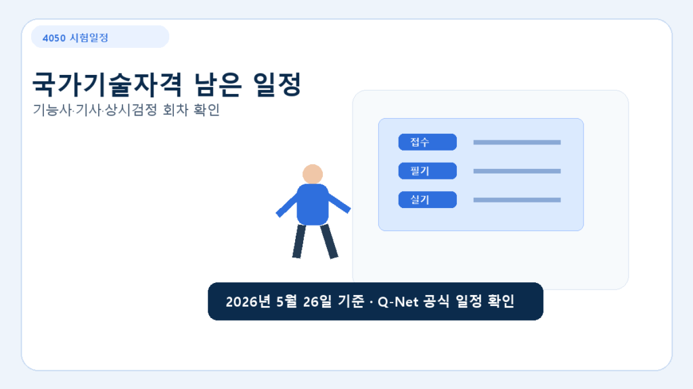

확인 필요 시험일정Q-Net 월간시험일정 보는 법: 이번 달 접수 가능한 자격증 확인하기
Q-Net 월간시험일정에서 이번 달 접수 가능한 국가기술자격을 확인하는 방법과 4050이 먼저 볼 항목을 정리했습니다.
Q-Net 월간시험일정은 국가기술자격을 준비할 때 가장 먼저 확인해야 하는 페이지입니다. 연간 시행계획은 큰 흐름을 잡는 데 좋지만, 실제 접수 가능 여부와 이번 달 시험 진행 상황은 월간시험일정에서 다시 확인해야 합니다.
특히 40대와 50대가 재취업이나 직무 전환을 목적으로 자격증을 준비한다면 “언젠가 볼 시험”보다 “이번 달 접수할 수 있는 시험”을 먼저 찾는 편이 현실적입니다. 준비 기간이 짧은 기능사, 상시검정 종목, 국비지원 훈련과 연결되는 자격증은 월별 일정 확인이 중요합니다.
Q-Net 월간시험일정에서 먼저 볼 것
| 확인 항목 | 봐야 하는 이유 | 4050 체크 포인트 |
|---|---|---|
| 원서접수 기간 | 접수 시작과 마감이 짧은 경우가 많습니다. | 마감일보다 접수 첫날 오전에 확인하는 것이 안전합니다. |
| 필기시험 기간 | CBT 시험은 기간 안에서 날짜를 고르는 경우가 있습니다. | 직장·가족 일정과 겹치지 않는 날짜를 먼저 확보합니다. |
| 실기시험 기간 | 종목별로 실습장과 시험장이 다를 수 있습니다. | 거주지에서 이동 가능한 시험장인지 확인합니다. |
| 합격자 발표일 | 다음 단계 준비와 자격증 활용 시점을 잡을 수 있습니다. | 취업 지원, 이력서 수정, 국비훈련 수료 일정과 함께 봅니다. |
월간시험일정 확인 순서
- Q-Net 월간시험일정 페이지에 접속합니다.
- 현재 월 또는 다음 달 일정을 선택합니다.
- 준비 중인 종목명을 확인합니다. 예를 들어 전기기능사, 지게차운전기능사, 한식조리기능사처럼 정확한 종목명으로 보는 것이 좋습니다.
- 원서접수, 필기, 실기, 발표일을 따로 메모합니다.
- 국민내일배움카드나 HRD-Net 훈련과정으로 공부 중이라면 훈련 종료일과 시험일이 맞는지도 확인합니다.
4050에게 특히 유용한 종목
월간시험일정은 모든 자격증을 똑같이 보는 페이지가 아닙니다. 4050 세대라면 실제 일자리와 연결될 가능성이 있는 종목부터 확인하는 것이 좋습니다. 시설관리 쪽은 전기기능사, 공조냉동기계기능사, 에너지관리기능사처럼 현장 수요가 있는 종목을 볼 수 있습니다. 물류와 현장직 전환을 생각한다면 지게차운전기능사와 굴착기운전기능사 같은 상시검정 종목을 먼저 확인하는 편이 좋습니다.
돌봄과 생활서비스 분야에서는 요양보호사, 사회복지사 2급처럼 국가기술자격이 아닌 자격도 함께 검토할 수 있습니다. 다만 Q-Net 월간시험일정은 주로 국가기술자격 중심이므로, 요양보호사나 사회복지사처럼 별도 기관이 관리하는 자격은 해당 공식 기관 안내를 따로 확인해야 합니다.
월간 일정만 보고 바로 접수하면 안 되는 이유
월간시험일정에 종목이 보인다고 해서 누구나 바로 응시할 수 있는 것은 아닙니다. 기사·산업기사·기능장처럼 응시자격이 필요한 자격은 학력, 경력, 관련 전공 여부를 먼저 확인해야 합니다. 기능사는 상대적으로 진입 장벽이 낮지만, 실기 준비가 필요한 종목은 시험 일정만 보고 결정하면 준비 기간이 부족할 수 있습니다.
따라서 월간시험일정은 “이번 달 가능한 시험을 찾는 입구”로 보고, 최종 결정 전에는 응시자격, 실기 준비 기간, 국비지원 과정 여부, 시험장 위치를 함께 확인하는 것이 안전합니다.
함께 보면 좋은 글
자격증 선택 전 확인할 것
자격증은 취득 난이도만으로 고르면 안 됩니다. 4050 세대는 시험일정, 실기 준비, 실제 채용공고, 근무환경을 함께 확인해야 실패 가능성을 줄일 수 있습니다.
| 확인 순서 | 확인할 내용 | 판단 기준 |
|---|---|---|
| 1단계 | 시험 방식 | 필기, 실기, 상시검정 여부를 봅니다. |
| 2단계 | 준비 기간 | 직장·가사와 병행 가능한 기간인지 확인합니다. |
| 3단계 | 활용처 | 채용공고에서 실제 요구하는 자격인지 봅니다. |
| 4단계 | 국비지원 | HRD-Net 과정과 자비부담금을 함께 확인합니다. |
빠른 체크리스트
- Q-Net 시험일정을 먼저 확인합니다.
- 실기형 자격은 연습 환경을 봅니다.
- 자격증명으로 채용공고를 직접 검색합니다.
위 내용은 기본 판단 기준이며, 실제 신청이나 접수 전에는 공식 기관의 최신 안내를 다시 확인하는 것이 안전합니다.
마지막으로 확인할 질문
이 정보를 실제로 활용하기 전에는 세 가지를 다시 확인하는 것이 좋습니다. 첫째, 내가 해당 조건에 들어가는지입니다. 나이, 소득, 경력, 고용 상태, 거주지 같은 조건이 하나만 달라도 결과가 달라질 수 있습니다. 둘째, 신청 또는 접수 시점입니다. 지원사업과 시험일정은 접수 기간이 짧은 경우가 많아 날짜를 놓치면 다음 회차까지 기다려야 할 수 있습니다. 셋째, 공식 확인처입니다. 블로그 글은 이해를 돕는 정리 자료이고, 최종 판단은 정부기관, 공공기관, 시험 시행기관의 최신 안내를 기준으로 해야 합니다.
4050 세대는 준비 시간이 제한적인 경우가 많기 때문에 “가능해 보이는 정보”보다 “지금 바로 확인할 수 있는 정보”를 우선 보는 편이 안전합니다. 이 글을 읽은 뒤에는 관련 공식 페이지에서 현재 접수 여부, 준비서류, 상담 가능 시간을 다시 확인해 보세요.